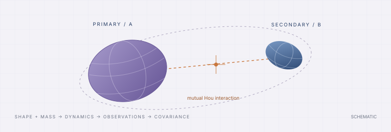

Understand the model.
Trust the result.
A practical guide to binary-asteroid gravity, mass covariance and observability. Build a study from small components, follow the mathematics, and trace every result back to its assumptions.

Choose your starting point
Build your own analysis
Choose bodies, gravity, solve-fors, measurements and statistical assumptions independently.
→02 / REPRODUCEStart from the Hera paper
Understand the four cases, both masses, degree-4 field estimates and barycenter nuisance.
→03 / INTERPRETRead the uncertainties
Named covariances, null directions, correlations, consistent plots and portable result folders.
→04 / LOOK UPFind a function or class
Exact signatures, defaults, attributes and source links across 87 modules.
→One pipeline, replaceable pieces
Hou automatic differentiation is the default. Explicit native analytic transport stays available. Reuse completed transport for compatible schedule, noise and prior trades; use independent arcs when each arc needs its own initial state.
Be precise about what is ready.
The Hera reproduction is a formal covariance forecast. Generic batch-estimation components exist; real binary-data fitting, sequential filters and complete all-chain finite-difference acceptance remain future work. See the capability matrix →
Keep your place
Search with Ctrl/⌘ + K, follow the page contents at the right, and use the back arrow to return to the same reading position. Chapters have previous/next links. Every API item has a stable deep link and a source reference.
Prefer a single document? Open the printable handbook or download the PDF. The website works locally without internet access; GitHub source links require repository access.